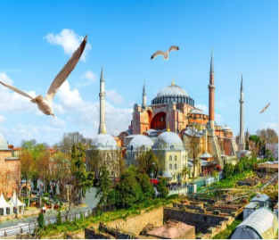
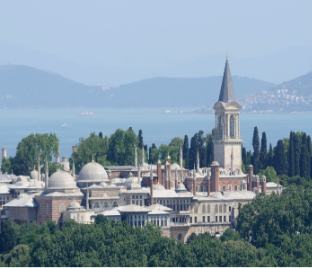
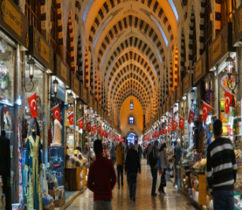

sitemizde olmadığını gördüğünüz bir bilgi varsa veya yanlış bir bilgi varsa bizi bilgilendirmek için
buraya tıklayınız

1.Ayasofya
Ayasofya, üç kez inşa edilerek dünyanın en tanınmış ibadethanelerinden biri haline geldi. 537 yılında son halini aldı. İstanbul’un fethinden sonra cami olarak hizmet verdi...

2.Topkapı Sarayı
Topkapı Sarayı, Osmanlı’nın ihtişamlı törenlerinden entrikalara kadar tarihe tanıklık eden yapıdır. Sarayın Harem bölümü ve Hırka-i Saadet Dairesi gezilebilir.

3.Kapalı Çarşı
Beyazıt'taki Kapalı Çarşı, 550 yıldır ayakta duran dünyanın en eski alışveriş merkezlerinden biridir. Sokaklarında tarihin kokusunu hissedebilirsiniz.